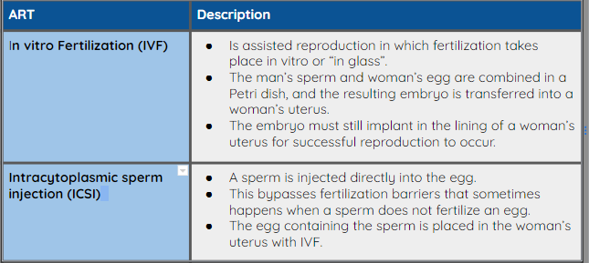

Reproduction
As we have discussed throughout this course, one of the functions of families is reproduction. When an individual or couple decides that they are ready to have children, they often consider several factors to determine their readiness.
Factors That Influence Reproduction
There are many factors that individuals and couples consider when deciding to have children. There are also social trends that influence Canadian’s choices regarding the decision to have children.
Callout
Take a look at the following articles to explore, in greater depth, the factors that influence reproduction in Canada.
|
Demographic Data: Fertility in Canada Having choices is liberating for Canadians. Naturally, more choices reflect greater changes in Canadian demographics. When discussing reproduction, the terms often used in demographic data are fertility and infertility. |
|
Take a look at the following resources to determine the patterns and trends in demographic data related to Canadian fertility.
|
|
Infertility
One in every four couples in developing countries was affected by infertility. |
- World Health Organization
Families that are faced with infertility have a number of options:
Assisted Reproductive Technologies (ART)

Callout
Source: Harding, M. (2017, August 04). "Infertility: A summary of treatments".
True or False Activity: Reproduction and Infertility
True or False
True or False
True or False
True or False
True or False
True or False
True or False
True or False
True or False
True or False